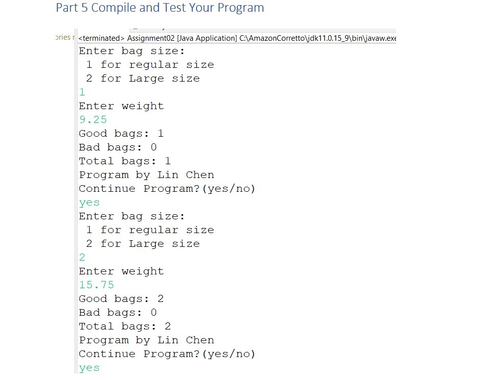
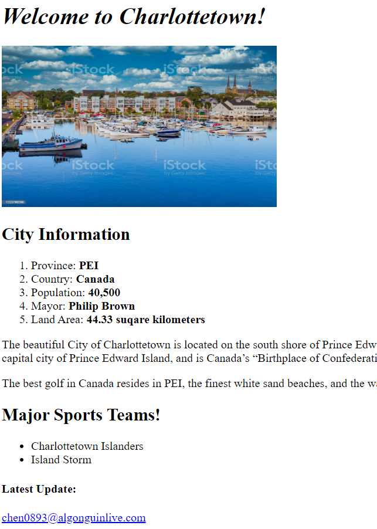

Program development tools: Eclipse, Visual Studio, Android Studio, XAMPP
To manage the operation of the expressway under the jurisdiction of the Group, and to examine the budget of the investment amount and maintenance of the subordinate units.
Coordinate with various units and branch businesses, promote the orderly development of all work and achieve good results.


JAVA Labs
The program needs to input the size and weight of the potato chip bags and
code a method by using Boolean to compare if within 0.01 oz or not to get the
good bag or bad bag, using math method to calculate the difference(absolute
value). Use loop(do,while) methods to verify the quality of the bags and
calculate the total count of the bags.
This is my first web disign, the index.html page for my portfolio of web development work.
It includes links to my Canadian homwtown picture and its information.